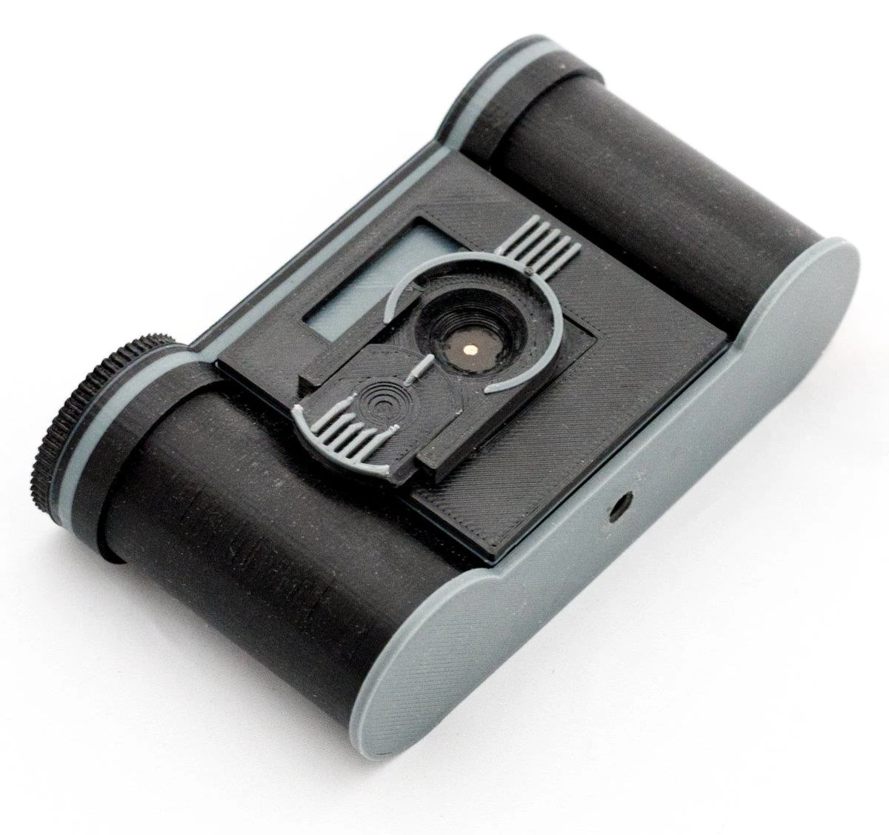
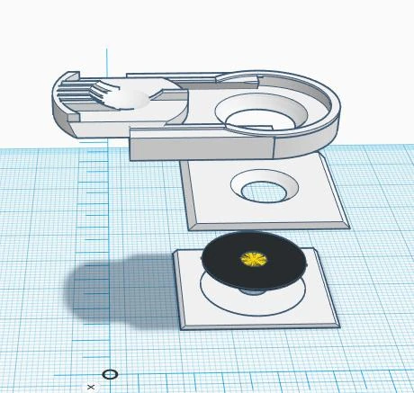
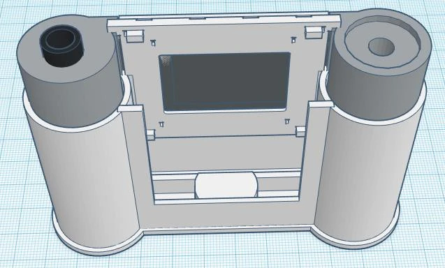

135 FILM / PINHOLE CAMERA / 2020
PiCa135
A pocketable pinhole camera with an integrated shutter and shift.
“The simplest camera need not offer the fewest possibilities.”
Anders Blomqvist / Spotmatic
168683 / Printables model reference
Why another pinhole camera?
I wanted a pocket-sized camera that offered more than the pinhole cameras already available. In particular, I wanted a way to photograph buildings without the leaning verticals I often got from tilting a conventional camera upwards.
PiCa135 combines a sliding shutter with a shifting pinhole. A few mechanical parts make it possible to compose a higher subject while keeping the camera level.
What shift changes
With a conventional pinhole camera, including more of a tall building often means tilting the whole camera upwards. Its film plane then tilts too, making parallel vertical lines converge. PiCa135 offers a different solution.

Conventional framing. The centred aperture offers a symmetrical image field. To include more of a tall facade, you may need to tilt the camera.
Shifted framing. Move the pinhole upwards relative to the film gate while keeping the camera and film plane vertical. The composition can rise without tilting the film plane, helping vertical lines remain parallel.
Small mechanics, useful consequences
Compactness mattered as much as optical control. The 135-film format made two additional decisions possible: protected take-up and a simple, format-independent way to count film advance.
Two ordinary cartridges
Instead of winding the exposed film onto a bare spool, PiCa135 feeds it into an empty 135 cartridge. The frames already inside the receiving cartridge have an extra layer of protection if the body is opened accidentally. Film still outside the cartridge remains vulnerable to light.
A click for every perforation
Short lengths of steel wire touch the perforations. Advancing the film produces a sound and a tactile response. Count the clicks and the same camera can use different frame lengths without an electronic counter.
One body, several formats
Interchangeable negative frames determine the image size. The click-count mechanism provides a corresponding measure of film travel. A mechanical constraint becomes a source of flexibility.

| Image format | Clicks |
|---|---|
| 24 × 50 mm | 11 |
| 24 × 36 mm | 8 |
| 24 × 24 mm | 5 |
| 18 × 24 mm | 4 |
| 8.5 × 24 mm | 2 |
Click counts as listed in Assembly Manual v1.0, p. 9. The parts list uses a slightly different designation for the narrowest format.
Documentation
The camera is designed for printing and assembly using ordinary parts. Exact tolerances, the shutter mechanism, film gates and accessories are documented in the manual. The assembly illustrations are working drawings, not presentation renders.
Assembly views Optional technical detail
Selected working views from the assembly manual. These are provided for understanding the components; the full manual is the authoritative construction guide.

